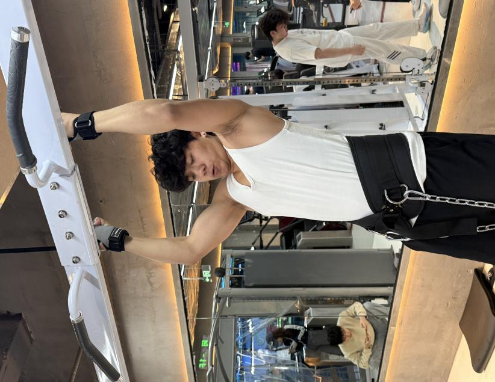
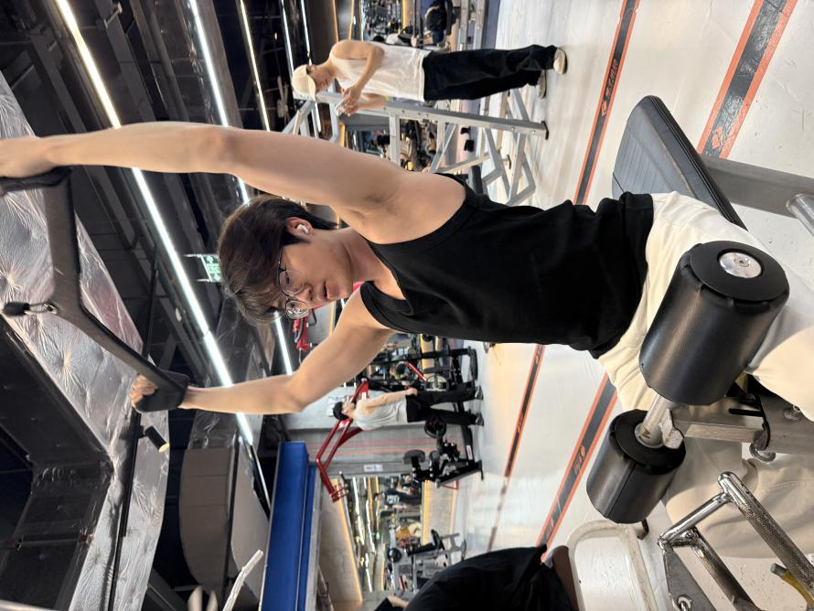
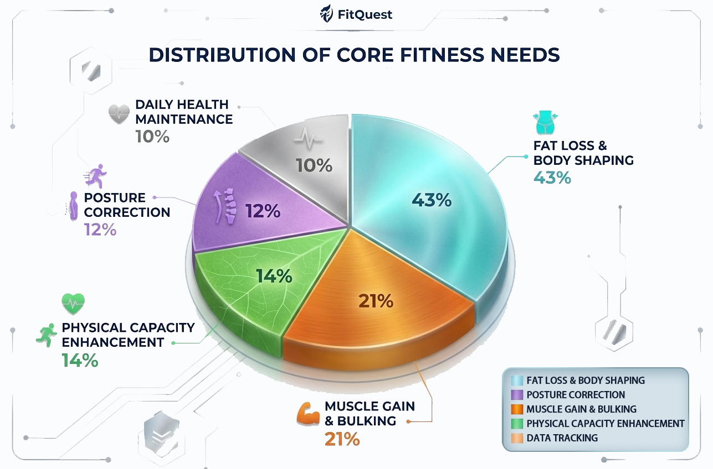
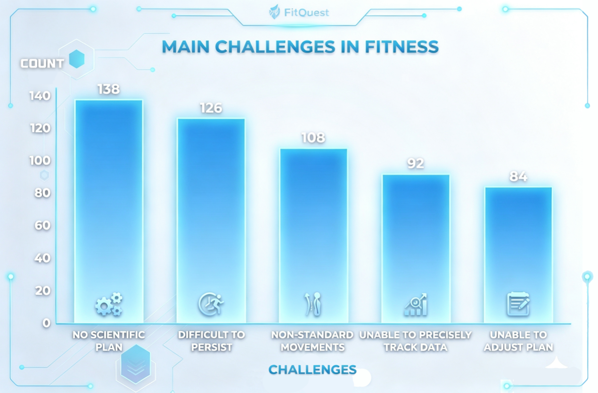

Real-time gamified feedback
The system must provide immediate visual feedback after each exercise check-in, including progress, reward indicators and achievement cues.
The requirement stage translates user journey insights into core system goals: visible feedback, low-threshold operation and a more diverse personalized fitness experience.
Emotional changes and pain points were identified across onboarding, task execution and social interaction. The design therefore focuses on visibility, feedback and simplified interaction paths.

The system requirements are designed to make fitness easier to start, more rewarding to repeat and more personal to each student.
The system must provide immediate visual feedback after each exercise check-in, including progress, reward indicators and achievement cues.
The system must simplify all core exercise operation steps so that daily check-in, task completion and progress review feel fast and frictionless.
The system must integrate AI personalized fitness coaching and lightweight student social functions to support diverse campus fitness needs.
The requirements create a motivation loop: students start with simple check-ins, receive immediate feedback, see progress over time, and return through rewards and social encouragement.


